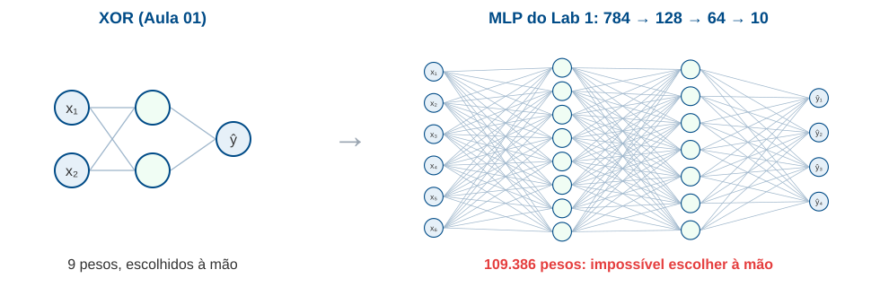
Na Aula 01, escolhemos à mão os 9 pesos que resolvem o XOR. Um MLP pequeno para o MNIST, 784 → 128 → 64 → 10, já tem 109.386. Hoje: como a rede encontra esses pesos sozinha.
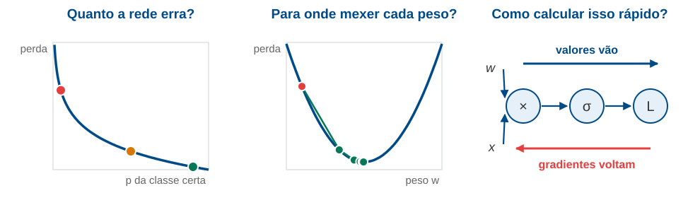
Cada pergunta tem uma resposta: a perda resume o erro num número; o gradiente diz, para cada peso, se aumentá-lo ou diminuí-lo reduz esse número; o backpropagation calcula o gradiente de todos os pesos de uma vez.
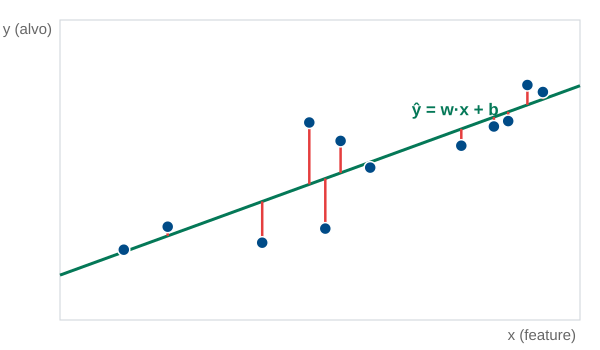
Cada barra vermelha é um resíduo: quanto a previsão errou naquele exemplo. Elevamos ao quadrado e tiramos a média:
onde:
Nestes 12 pontos, MSE = 0,93. O quadrado pune muito mais um erro de 2 do que dois erros de 1.
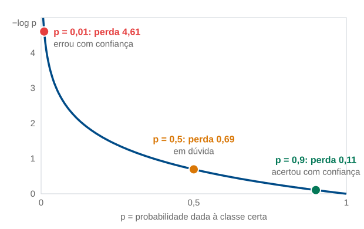
A rede dá uma probabilidade $p$ à classe certa. A perda do exemplo é:
Errar com convicção custa muito mais do que hesitar.
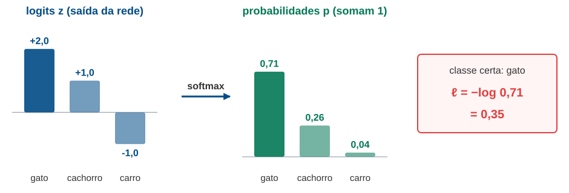
import torch, torch.nn as nn
logits = torch.tensor([[2.0, 1.0, -1.0]]) # gato, cachorro, carro
y = torch.tensor([0]) # classe certa: gato
loss_fn = nn.CrossEntropyLoss()
print(loss_fn(logits, y)) # tensor(0.3490)nn.CrossEntropyLoss já aplica o softmax por dentro. Se a rede terminar em softmax, ele será aplicado duas vezes e o treino fica pior.
As duas são $-\log$ da probabilidade que o modelo dá aos dados: MSE supõe ruído gaussiano, entropia cruzada supõe uma distribuição categórica (máxima verossimilhança).
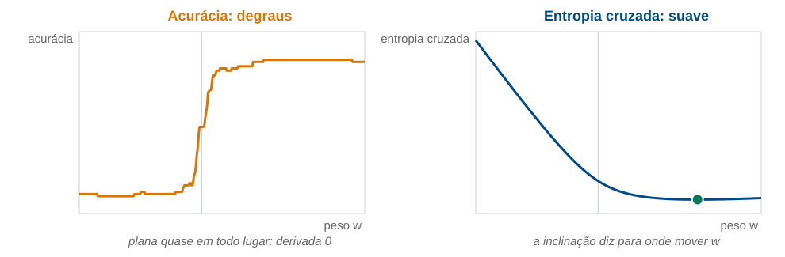
A acurácia só muda quando algum exemplo troca de lado; entre os degraus ela é plana, e a derivada é zero. A entropia cruzada muda um pouco a cada mexida no peso, e sua inclinação aponta o caminho. Avaliamos com a métrica, treinamos com a perda.
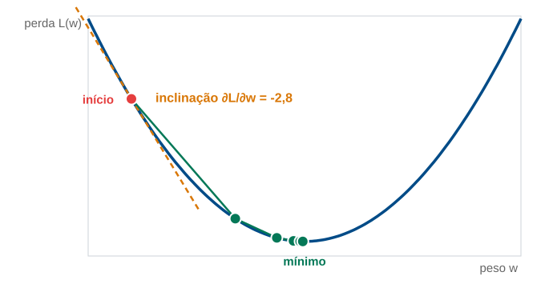
Em $w = -0{,}8$ a inclinação é $-2{,}8$: aumentar $w$ diminui a perda. Com passo $\eta = 0{,}6$:
Em geral:
onde $\eta$ é a taxa de aprendizado (learning rate).
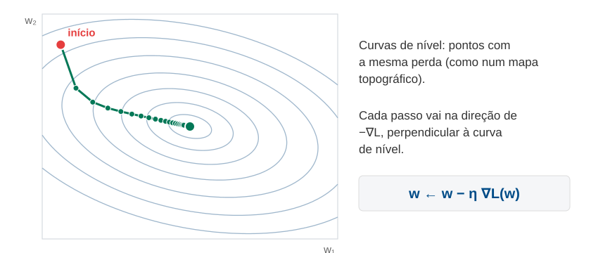
Com muitos pesos, juntamos as derivadas num vetor, o gradiente $\nabla \mathcal{L} = \big(\tfrac{\partial \mathcal{L}}{\partial w_1}, \tfrac{\partial \mathcal{L}}{\partial w_2}, \dots\big)$. Ele aponta a subida mais íngreme; damos o passo no sentido oposto.
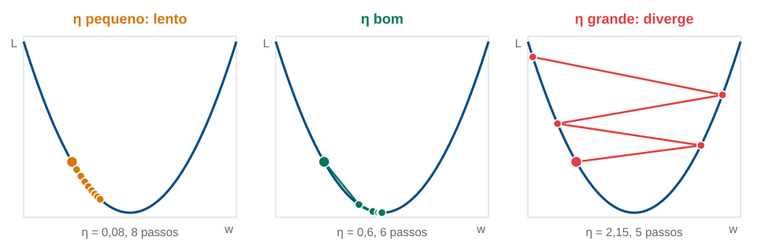
Pequeno demais, o treino não sai do lugar; grande demais, cada passo passa do mínimo e a perda explode. Nesta parábola, qualquer $\eta > 2$ diverge. Em redes reais, o valor bom se descobre testando (Aula 03).
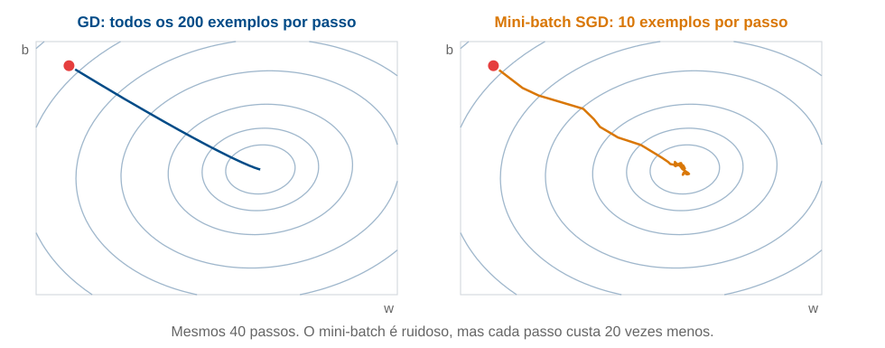
O gradiente exato usa todos os exemplos. Uma amostra pequena (o mini-batch) dá uma estimativa ruidosa, mas muito mais barata: com 55 mil imagens e batches de 128, é a diferença entre um passo e 430 passos pelo mesmo custo.
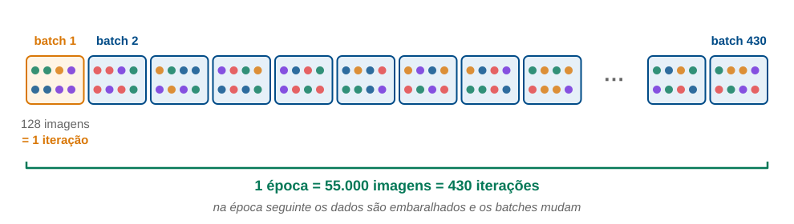
Os exemplos usados num passo. No Lab 1: 128 imagens.
Um passo de atualização dos pesos, com um batch.
Uma passada por todos os dados: $55.000 / 128 \approx 430$ iterações.
Uma passada extra pela rede para cada peso (109.386 no MLP do início da aula), e ainda com erro de arredondamento.
Uma passada para frente (forward) e uma para trás (backward) dão todas as derivadas exatas. O backward custa cerca de 2 forwards, qualquer que seja o número de pesos.
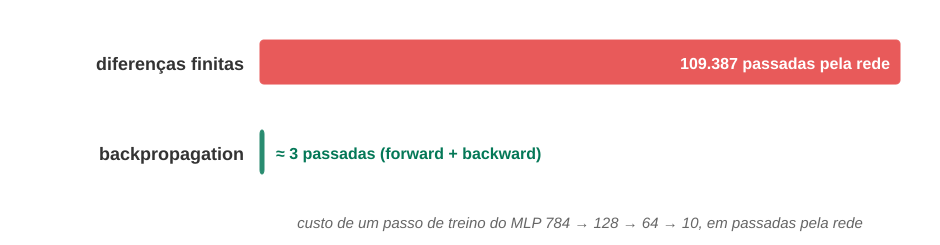
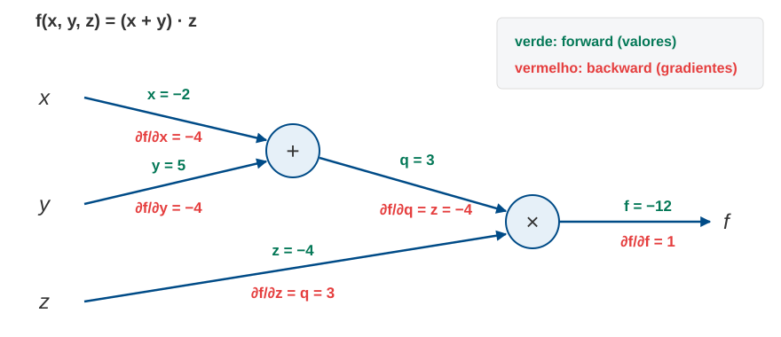
Forward (verde), da esquerda para a direita: $q = x + y = 3$, $\ f = q \cdot z = -12$.
Backward (vermelho), da direita para a esquerda: $\dfrac{\partial f}{\partial x} = \dfrac{\partial f}{\partial q}\cdot\dfrac{\partial q}{\partial x} = (-4)\cdot 1 = -4$
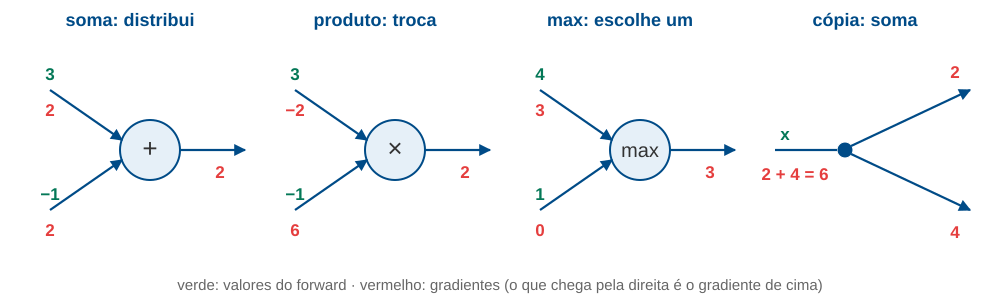
Soma distribui o gradiente igual.
Produto troca: cada entrada recebe gradiente × a outra.
Max (e ReLU) manda tudo para quem venceu.
Cópia: um valor usado duas vezes soma os gradientes.
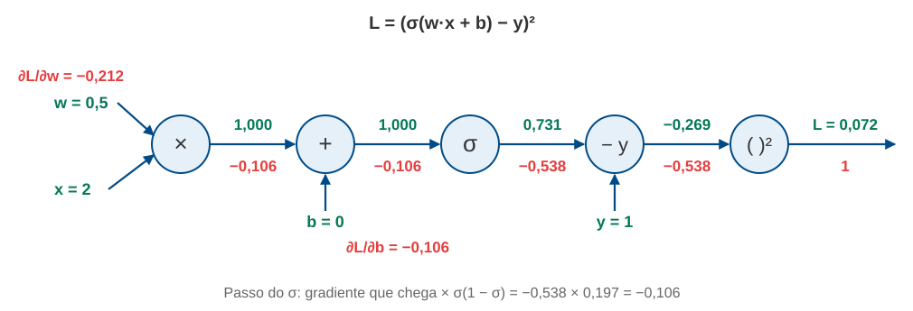
A única derivada nova é a da sigmoide: $\sigma'(z) = \sigma(z)\,(1 - \sigma(z))$. O resto são somas e produtos.
$\partial L/\partial w = -0{,}212 < 0$: aumentar $w$ reduz a perda. Faz sentido: $a = 0{,}73$ e o alvo é 1.
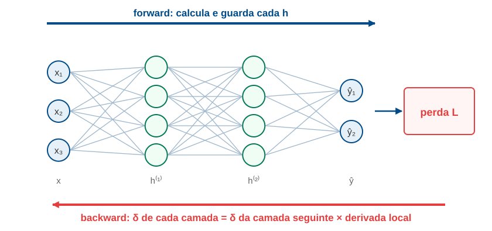
O forward guarda as ativações de cada camada; o backward as reaproveita. O gradiente de cada camada é o gradiente da camada seguinte vezes uma derivada local, a mesma regra do neurônio, repetida.
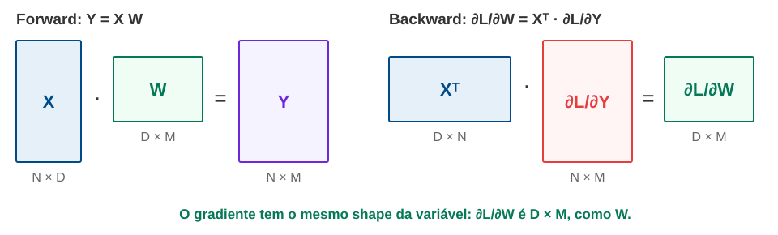
Num batch, as contas viram multiplicações de matrizes. Regra prática: o gradiente tem o shape da variável, e só existe um jeito de multiplicar as matrizes para chegar nele.
import torch
w = torch.tensor(0.5, requires_grad=True)
b = torch.tensor(0.0, requires_grad=True)
x, y = torch.tensor(2.0), torch.tensor(1.0)
L = (torch.sigmoid(w * x + b) - y) ** 2 # forward: monta o grafo
L.backward() # backward: percorre de volta
print(L.item()) # 0.0723
print(w.grad) # tensor(-0.2115)
print(b.grad) # tensor(-0.1058)Os mesmos números do grafo, sem fazer conta nenhuma.
requires_grad=True: "quero a derivada em relação a este tensor"L.grad_fn)backward() guarda o resultado em .grad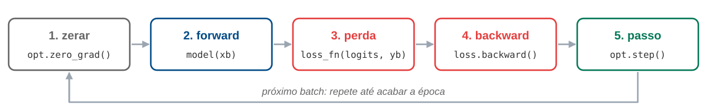
for epoch in range(10):
for xb, yb in train_loader:
opt.zero_grad()
loss = loss_fn(model(xb), yb)
loss.backward()
opt.step()O PyTorch soma os gradientes em .grad. Sem zero_grad(), cada passo usaria o gradiente de todos os batches anteriores.
Em duplas. Rodada 1: o aluno A explica em 2 minutos, no papel, como calcular $\partial L/\partial w$ para $L = (\sigma(wx+b) - y)^2$, com $w = 1$, $x = 1$, $b = 0$, $y = 0$. O aluno B avalia com o checklist. Rodada 2: trocam os papéis com o grafo $f = (x \cdot y) + \max(y, z)$, com $x = 3$, $y = -1$, $z = 2$.
Participação (os dois papéis): 30 XP. +5 XP por item do checklist cumprido como explicador (máx. +20).
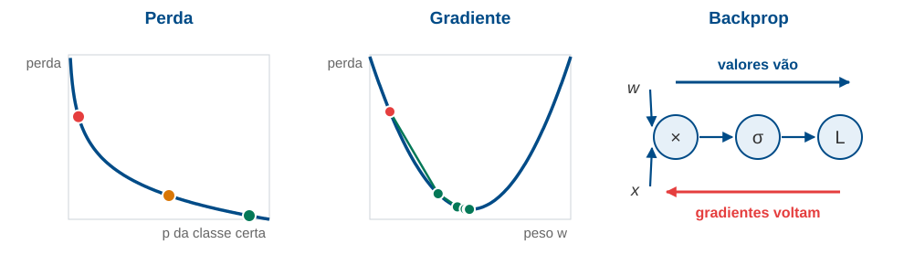
loss.backward()O passo simples de hoje é lento e sensível ao learning rate. Veremos momentum e Adam, inicialização e como evitar que a rede decore os dados de treino.
loss.backward() e verifique com np.allclose que todos os gradientes batem.sklearn.datasets.make_blobs.Prazo: 7 dias · Envio: link do Colab na página do desafio